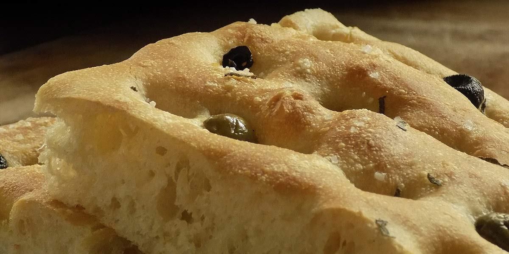

Focaccia
Recipe Specification
Ingredients List
| Ingredients | Quantity |
|---|---|
| Strong White Flour | 350g |
| Dried Yeast | 10g |
| Olive Oil | 90ml |
| Table Salt | 2 tsp |
| Rosemary | 2 Sprigs |
| Maldon Sea Salt | 1 tsp |
Yield: 1 Loaf
Preparation
- Sift flour and add yeast and half the Table salt.
- Make a well in the middle of the flour and add 225ml of lukewarm water and 15ml of Olive Oil.
- Mix flour into water until dough comes away from the side of the bowl.
- Apply oil to the surface of bowl and transfer dough to it before placing in a sealable loose polythene bag.
- Leave dough to prove and rise for 1 to 1½ hours at room temperature until volume has doubled in size.
- Apply greaseproof paper to a square baking tin before brushing inside surface with Olive oil.
- Remove dough from bowl to a floured surface and knead until all the air is knocked out of it.
- Place dough in lined baking tin and push into corners of tin.
- place tin in polythene bag, seal and prove for a further 1 hour.
- Remove baking tin from polythene bag and evenly make finger indentations in dough. Ensure finger indentations are about an inch apart in all directions and don’t pierce the dough.
- Whisk the remaining Olive oil with 30ml of water and 1 tsp of Table salt before brushing the surface of the dough with it.
- Pick rosemary and distribute leaves evenly over the surface of the dough. Sprinkle Maldon Sea Salt over the top of the dough
- Pre-heat Oven to 200’C.
Cooking Instructions
- Place dough on middle shelf of the oven and bake for 20-25 minutes.
- Place on a wire rack to cool.

Serving Suggestions
Bread can be enjoyed with olives, olive oil, tapenade, houmous and pate.
Storing instructions
Once cool, place in bread bin and consume with 5-7 days.
Reheating Instructions
Slice and place in pre-heated oven 160’C, for 3-4 minutes.